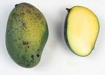
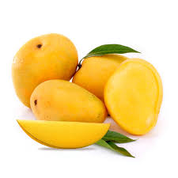
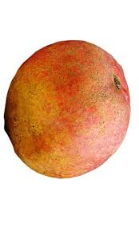
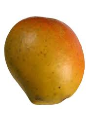
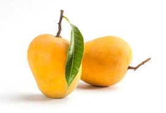
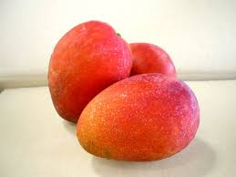
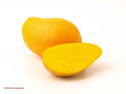

|  |
Alampur Benishan, often incorrectly spelt as Baneshan, is a mango cultivar that originates from India. The mango is a medium-sized fruit, with its appearances ranging from green to yellow, thin skin and fiberless.The flesh of the ripe fruit ranges in colour from yellow to golden-yellow to orange-yellow. Most Indian strains stay green even on ripening, though a slight yellowing or blush is often noted near the stalk. |
|  |
Alphonso mango is a seasonal fruit, considered to be among the most superior varieties of the fruit in terms of sweetness, richness and flavour. |
|  |
The fruit is shaped very similar to its parent 'Haden' and has a similar flavor with fiberless flesh, averaging about a pound in weight and containing a monoembryonic seed. It ripens from July to mid-August in Florida, making it a mid-season cultivar there. The trees are moderately vigorous growers and have a reputation for being slightly more cold tolerant than other varieties. |

|
The fruit is of round to oval shape, with no or minimal lateral beak. Weight can vary from a pound to 3 pounds. At maturity, the fruit remains largely green with some yellow. The flesh has no fiber, is rich in flavor, and contains a monoembryonic seed. It ripens from July to August in Florida. The tree has a low growth spreading habit, and can be kept under 20 feet. |
|  |
The fruit averages less than a pound at maturity and typically remains mostly green, with little red blush. The flesh is dark orange and completely fiber-less. It has a flavor described as being rich and spicy. |
|  |
The fruit is small, averaging a pound or less, and ripens from June to July in Florida. At maturity it may be green to yellow, but the fruit doesn't develop red blush like other mangoes. The flesh is not fibrous, is orange and rich in flavor with a strong aroma, and contains a monoembryonic seed.The fruit are highly resistant to fungus. 'Carrie' trees can be vigorous growers, but their compact growth habit makes them easy to manage. They have dense, rounded canopies. The leaves are distinctive for being somewhat wider than most mango leaves. |
|  |
'Irwin' fruit is of ovate shape, with a rounded base and a pointed apex, lacking a beak. The smooth skin develops an eye-catching dark red blush at maturity. The flesh is yellow and has a mild but sweet flavor and a pleasant aroma.It is fiberless and contains a monoembryonic seed. The fruit typically mature from June to July in Florida and is often born in clusters. The trees are moderately vigorous growers capable of exceeding 20 feet in height if left unpruned, developing open canopies. |
|  |
The fruit average less than a pound in weight at maturity and are elongated in shape similar to southeast Asian-descended cultivars. The skins turns a pastel red color, and the flesh is fiberless and sweet. In Florida, the fruit ripen early. Trees are small and can be maintained at a height of 7 feet, lending to Manilita's labeling as a 'condo mango'. |